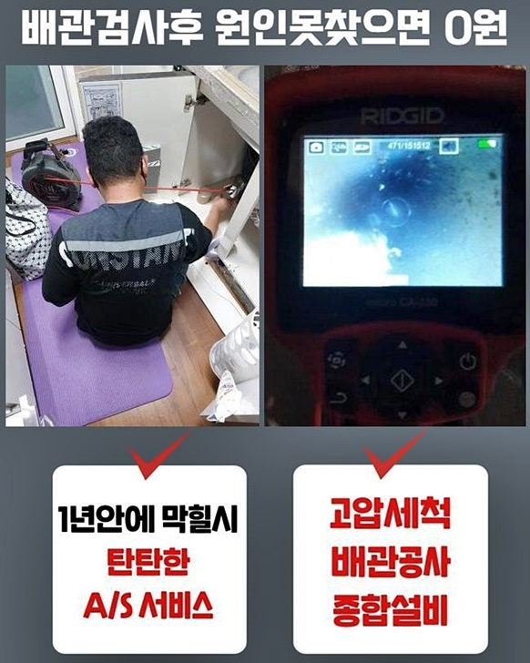
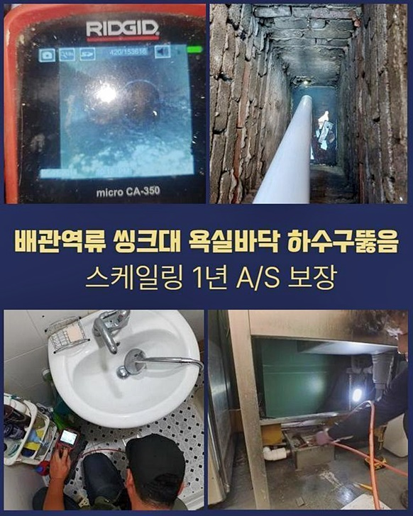
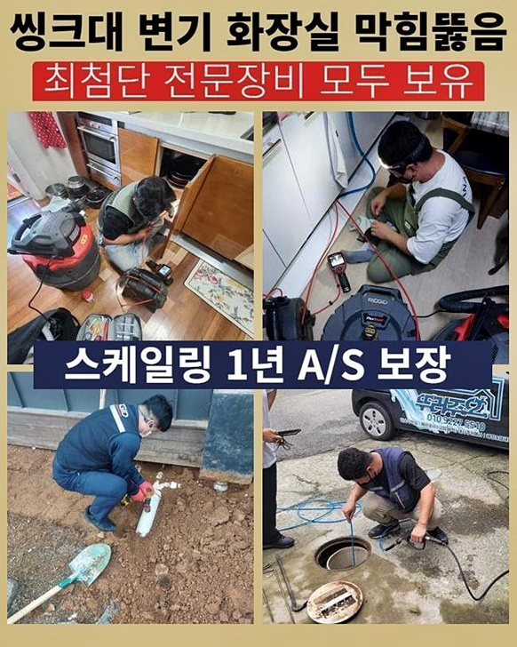
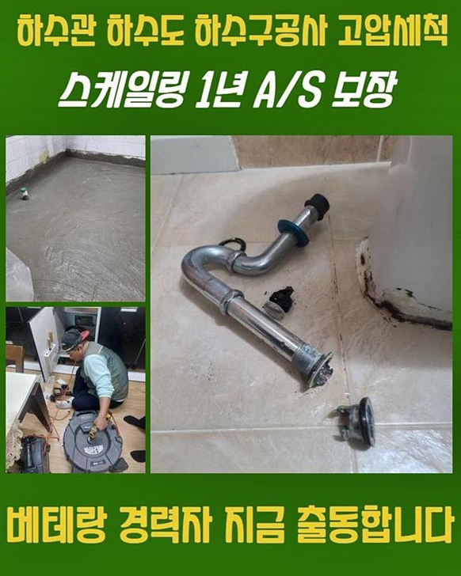
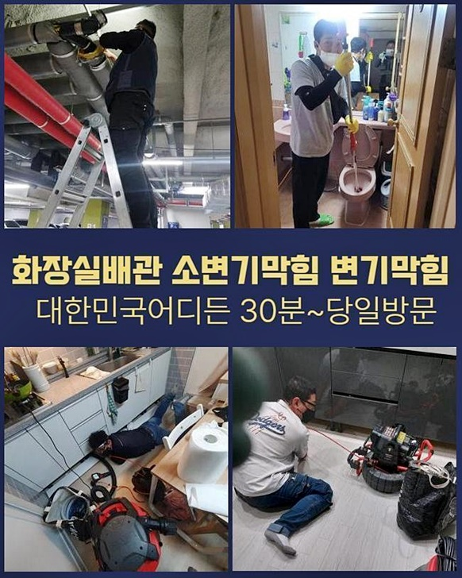
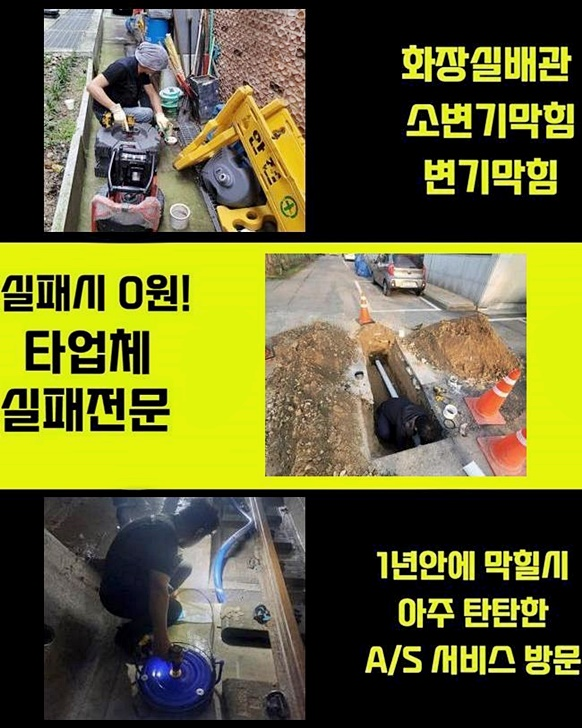
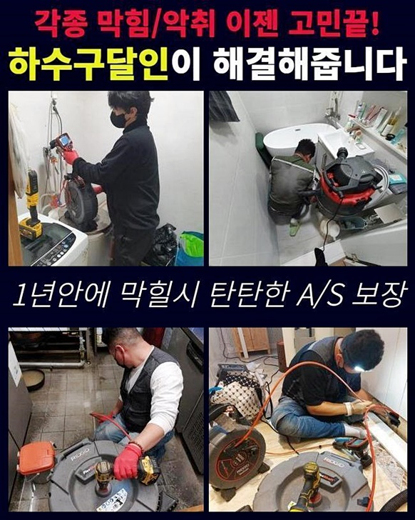

🏠 일산 풍동화장실역류 풍산동 배수구뚫기 설비공사
용인시 처인구 배관막힘 전문 시공 후기

📋 작업 개요
- 위치: 용인시 처인구, 수원시 영통구, 화성시 동탄
- 서비스 유형: 배관막힘, 누수수리, 고압세척, 내시경점검
- 작업 일시:
- 업체명: 하수구수사대 (010-5615-2118)
🔍 문제 상황
일산 풍동화장실역류 풍산동 배수구뚫기 설비공사
막힘증세와 관련해 작업해드렸던 수리사례를 토대로 설명해볼테니 훑어보시면 도움될거에요
작업사례중 주방부엌쪽에서 배수구가 막히는문제가 발현되서 방문하였는데요
싱크대는주로 기름기가 쌓여서 막혀버리게되는데 저흰 하수구내부 점검을통해 막힌이유가 뭔지 알아낸뒤 처리해드리고있죠
현장을살폈더니 좋지못한 냄새까지 발현되고있었을 뿐아니라 물사용까지도 어려웠답니다
이러한경우 메인하수구에 이물이퇴적되서 물이정상적으로 흘러가지않는것으로 예상할수있었죠
이러한것들을 빠르게 해결해드리기위해 성심성의껏 배관시공을 착수하고있어요
오염물제거를 통하여 배관을 뚫어드리고 고객분의 불편함을 타파시킬게요!
고압청소기는 고압수를 통해서 오염물을 소거시킴으로써 정확한세척이 가능하답니다
이물의양이 많은하수구를 깔끔하게 세척시키기위해 활용되는데 고압세척도구는 하수관청소시 정체증상을 처리하는데 효율적이에요
청소과정중에는 주변에이물이 튀지않도록 큰비닐을 보존하여 피해를 예방하고있죠
첨단기구들로 배관기능의 무리가가지않게 하고있고 확실히 사용되도록 기여하고있죠
배관들은 곳곳마다 설치되어있지만 이어져있으므로 막힘문제가 자주일어나요

🔎 원인 분석
💡 전문가 진단: 정밀 진단 장비를 사용하여 슬러지의 고착 여부를 판명하고 타격/세척 작업을 실시했습니다.
하수구주위를 들여다보니 모발과 기름기있는 오염물질들이 쌓여있는걸 확인이가능했죠
이러한때는 하수구내시경을 이용해서 세밀한 검수과정이 필요하겠습니다
공용관의경우 물길자체가 일부로 확보가된 상황이지만 공간이부족하여 배수상황에 영향이가고있는 것이었죠
전체로 점검해보니 간단히 잔해물을 제거시키는 기계보단 고압청소기가 효과를볼수있다고 판단할수있었네요
의뢰자분께 의견을구한뒤 고압세척과정을 착수할수있었네요
배관cctv를 활용해서 배관안속을 세심하게 체크할수있습니다
오염물로인해 하수관이 막혔을때는 이물세척이 필수라고 할수있죠
그치만 스케일링은 잘못진행한다면 배관안속에 손상이생기며 결국에는 심각한경우로 이어질수가있죠
저희들의경우 오래된경험을 가지고있는 전문기사들이 현장을 방문하여 점검을 진행하고있으니 하수구에 손상이생길까봐 걱정하실 필요없답니다
석션장비의경우 잔해물을빨아올려 소거하는 장비인데요
이를통하여 내부속에있는 잔여물질들을 빨아올려 문제가무엇인지 간략하게 알아낼수있어요
샤프트장비는 잔해물들을 분해시키는 역할과 굳은이물들을 없애는데 이용된답니다
이다음엔 내시경과정을 진행한뒤 내부상태를 파악하여 알맞은조치로 진행하면되는데요

🔧 작업 과정
배관카메라로 배관속을 살피는단계는 막혀버린 이유에있어서 알아내기위해 필요한과정이죠
내시경검수결과 막힘문제가 일어난것이 잔해물질들이 배관안에 퇴적되어 막혀버렸다는것을 살펴볼수있었는데요
내시경장비끝에 작은촬영기가 달려있기때문에 육안으로 파악하기어려운 곳에다가 사용하고있습니다
막혀있는지점과 잔해물의 형태가어떤지 명확하게 알아낼수있습니다
내시경카메라로 인하여 작업계획을 결정함에있어 도움을준답니다
그렇기에 막히는현상이 일어나게되었다면 내시경도구를 써서 자세하게 검사하는것이 중요사항중 하나라고할수있죠
이물을없애고자 전문장비를 구비하여 배관속이물을 처리해보려고해요
다시한번 알려드리지만 샤프트장비노즐 끝쪽에 달려있는사슬이 배관을회전하며 배관내부의 고착덩어리를 갈아내준답니다
저희들의경우 작업방식을 분명하게 공개해서 고객분들이 작업과정의 필요성에대해 파악하고 믿음이가도록 신경을 쓰고있답니다
배관을뚫을때 전문인이아니라면 되려배수구에 파손을일으킬수 있으니 과도하게 셀프조치를 하는것은 삼가주시는게 좋습니다
전문가에게 맡기시면 별탈없이 다양한 노하우를통해 문제가처리되면 역류문제나 누수문제가 발발되지않게끔 마무리될겁니다
다음현장은 화장실배관이 막힌 장소에내방했죠
이번장소의 경우에도 이물들이 쌓이고쌓여 막힘을 유발시킨 현장이었죠
점검한뒤 분쇄전용기구인 샤프트도구를 활용해보기로 결정했는데요
퀴퀴한냄새도 동반하고있는 상태이므로 하수도물길을 확보해 진행하기로했죠
이를통하여 빠르고효과적인 작업과정이 착수될것을 고대할수있었죠
오랫동안 축적되어진 이물들이 하수구아래쪽에 고이게되면서 문제를 일으킨것을 파악했어요
누누히 말씀드리고있지만 하수구의관한 전문성이 없다고한다면 무슨원인으로 배관시스템이 무너진건지 확실히 판단할수없죠
그렇기에 저희와같은 기술자의 지원을 받으셔야 하는것이죠
빠른시일내로 하수구를뚫어 깨끗한배관으로 제공하겠습니다
같은현상으로 이어지지않게 예방조치까지 취해드릴게요


✅ 작업 완료
고객의만족을 우선시하는 써비스를 보여드리겠습니다
깔끔한 하수구로 유지시키기위해 최선을다할게요
조치를취하지않고 방치한다면 역류나누수같은 현상으로 이어질수있으므로 막힘징조를 보일때 대처하시는것이 좋겠습니다
전국어디라도 1시간안으로 도착이가능하고 최첨단기계까지 구비된상태로 대기중이니 편하실때 문의주세요
이밖에도 궁금증이 풀리지않으신게 있다면 편안하게 의뢰주시면 상세하게 응대도울게요
앞으로생길 하수구문제 저희들이 바로잡아드릴게요




⚠️ 하수구 배관 막힘 예방 및 관리 가이드
- ✅ 머리카락, 비닐, 물티슈 등 물에 분해되지 않는 이물질은 절대 흘려보내지 마세요.
- ✅ 기름기 많은 식기는 설거지 전 키친타올로 먼저 기름때를 닦아내세요.
- ✅ 주기적으로 배수구에 뜨거운 물을 가득 부어주어 유지방 고착을 방지하세요.
- ✅ 작업 후 1년 이내 재발 시 무상 A/S 보증 서비스를 제공합니다.
💡 핵심 정리
- 확실한 장비 작업(내시경 점검 및 샤프트 스케일링)으로 원인을 뿌리 뽑습니다.
- 작업 후 1년 이내에 동일한 부위 재발 시 100% 무상 A/S 서비스를 보장합니다.
- 서울 · 경기 · 인천 전 지역에 24시간 언제든 긴급 출동할 수 있도록 항시 대기 중입니다.
❓ 자주 묻는 질문 (FAQ)
🚨 용인시 처인구 배관막힘 문제로 고민이신가요?
정확한 원인 진단과 확실한 시공으로 재발 없는 해결을 약속드립니다.
24시간 긴급 출동 | 서울 · 경기 · 인천 전지역 | 1년 내 재발 시 무상 A/S